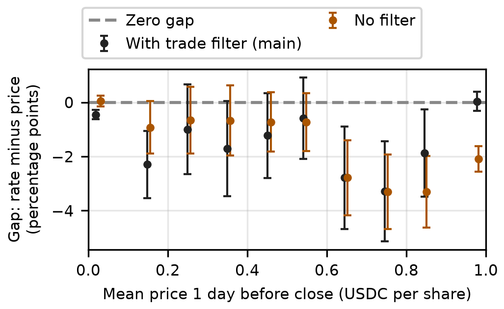
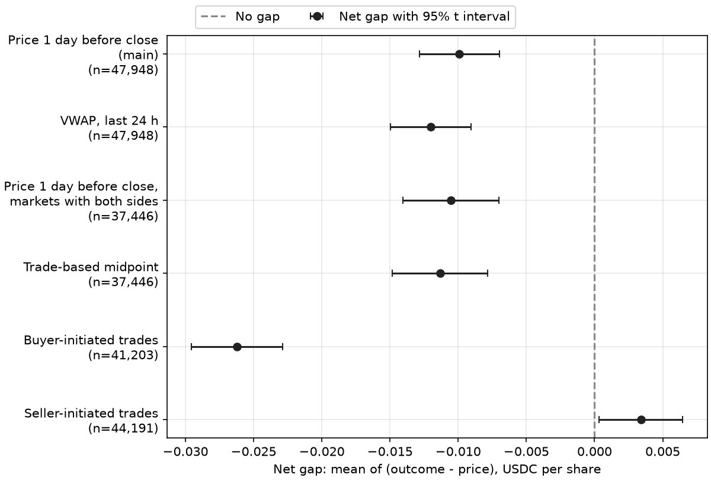

두 심사자는 논문에 무엇을 물을까What two reviewers will ask about our paper
상위 학회 심사자와 수업 담당 교수가 같은 논문을 읽는다. 각자 무엇을 묻는지, 우리가 무엇을 고쳤는지, 무엇이 남았는지 본다. 4단계다.A top-conference reviewer and the course professor read the same paper. We see what each will ask, what we changed, and what is still open. 4 steps.
\todo 자리 5개가 열려 있다.At a conference the verdict is reject. In the course the content is enough. Table 4 in Section 5.4 and Appendices F and G answer the review asks. M3 used proxy keys only. 5 owner \todo slots stay open.상태 색: 노란 칸은 아직 열려 있다. 칸 안 회색 글은 끝냈다는 뜻이다.Cell colors: yellow means still open. Grey text inside a cell means done.
상위 학회 심사자 (가상)Top-conference reviewer (imagined)
왜 이 심사자를 상상하나: 학회는 새로움과 타당성을 본다. 약한 곳을 미리 알아야 논문을 고칠 수 있다.Why we imagine this reviewer: A conference judges novelty and soundness. We need to know the weak spots before we can fix the paper.
판정: reject. 데이터와 재현성(reproducibility)은 강하다. 핵심 효과(순 차이 −0.99%p)가 측정 방식의 오차로 설명될 수 있다.Verdict: reject. Data and reproducibility are strong. The core effect (net difference −0.99 percentage points) may come from how we measure it.
| 항목Item | 평가 (심사자)Rating (reviewer) | 이유Why |
|---|---|---|
| 새로움(novelty)Novelty | 약함Weak | 오래된 질문을 새 데이터셋에 적용했다.An old question applied to a new dataset. |
| 타당성(soundness)Soundness | 보통Fair | 사전 등록(pre-registration)은 좋다. 독립성 가정과 가격 정의가 약하다.Pre-registration is good. The independence assumption and the price definition are weak. |
| 재현성(reproducibility)Reproducibility | 강함Strong | 모든 숫자가 생성된 macro다.Every number is a generated macro. |
| 관련 연구(related work)Related work | 매우 약함Very weak | 심사자: 참고문헌이 너무 적다. 지금 2절은 7편을 인용하고 논문 전체는 11편이다.Reviewer: too few references. Section 2 now cites 7 works and the whole paper cites 11. |
| 글과 형식Writing and format | 약함Weak | 심사자: 내부 용어, 열린 \todo, 긴 길이. 지금 내부 용어는 없고 \todo 5개가 열려 있다. 본문은 7쪽(2단)이고 전체는 21쪽이다.Reviewer: internal jargon, open \todo slots, long length. Now the jargon is gone and 5 \todo slots are open. The body is 7 pages (two columns) and the paper is 21 pages. |
심사자가 묻는 것, 우리가 바꾼 것, 아직 열린 것What the reviewer will ask, what we changed, what is still open
| 심사자의 질문Reviewer asks | 지금 답하는 곳Where it is answered now | 아직 열린 것Still open |
|---|---|---|
| M1 가격 정의: −0.99%p는 호가 차이(bid-ask spread) 절반으로도 설명되나? 지금 가격은 마지막 timestamp의 체결가 평균이다.Price definition: can half the bid-ask spread explain the −0.99 point gap? Our price is the mean trade price at the last timestamp. | 부록 G.1(그림 15)과 표 4의 M1 행. run 150310에서 거래량 가중 평균 가격(volume-weighted average price, VWAP)과 체결가 기반 중간 가격(midpoint)으로 다시 계산했다. 순 차이는 −1.20%와 −1.13%이고 구간은 모두 0 아래다. 차이는 평균 호가 차이 절반(1.57%) 안에 있다.Appendix G.1 (Figure 15) and the M1 row of Table 4. Run 150310 recomputed with the volume-weighted average price (VWAP) and a trade-based midpoint. The net gaps are −1.20% and −1.13%, both intervals below 0. The gap is within the mean half spread (1.57%). | 끝냈다. 중간 가격은 호가가 아니라 체결가 기반 대용값이다.Done. The midpoint is a trade-based proxy, not a quote midpoint. |
| M2 "outcome 1" 편향인가 "Yes" 편향인가? 남긴 시장에서 outcome 1의 63.9%가 Yes다.Is the bias about "outcome 1" or about "Yes"? In the kept markets 63.9% of outcome 1 is Yes. | 그림 3(b)가 구간별 격차를 보인다. 부록 G.2(그림 16)에서 결과 이름이 Yes/No인 시장 30,112개의 Yes가 관측 비율보다 비싸다(순 차이 −1.32%). D-040: 주 결과는 "outcome 1"로 두고 이 문장을 더한다.Figure 3(b) shows the gap per bin. Appendix G.2 (Figure 16) shows that in the 30,112 markets labelled Yes/No, Yes is priced above its observed rate (net gap −1.32%). D-040: the main result stays "outcome 1" and this sentence is added. | 끝냈다. 소유자가 "둘 다 쓰기"를 골랐다.Done. The owner picked "write both". |
| M3 독립성: 한 사건의 시장들은 함께 움직인다.Independence: markets on one event move together. | 부록 G.3(그림 17). 사건 ID가 없어서 대리 키(proxy key)로 군집 부트스트랩(cluster bootstrap)을 했다. k1(slug 앞 3단어)의 구간 [−1.41%, −0.58%]은 여전히 0 아래다.Appendix G.3 (Figure 17). Event ID is missing, so we ran a cluster bootstrap with proxy keys. The k1 (first 3 slug words) interval [−1.41%, −0.58%] is still below 0. | 일부 끝냈다. 진짜 사건 ID는 없다.Partly done. No real event ID yet. |
| M4 선택 편향: 688,131개 중 47,948개(7.0%)만 남았다.Selection bias: only 47,948 of 688,131 markets (7.0%) were kept. | 부록 G.4(그림 18). 남긴 시장과 뺀 시장을 비교했다. 거래량 중앙값은 1,790.0 대 69.0, 거래 수 중앙값은 292.5 대 17이다.Appendix G.4 (Figure 18). Kept and dropped markets compared. Median volume 1,790.0 versus 69.0, median trades 292.5 versus 17. | 끝냈다. 설명만 하고 판정하지 않는다.Done. Descriptive, no verdict. |
| M5 실제로 중요한 크기인가? 카이제곱의 31.3%가 bin 0에서 나온다.Does the size matter in practice? 31.3% of the chi-square comes from bin 0. | 부록 G.5(그림 19). 보정 회귀의 기울기는 1.028, 절편은 −0.089다. Brier skill score는 0.538이다. accuracy는 다수 클래스 63.4%, 0.5 기준 83.4%다. 격자 가격 7개 모두 실용적 크기가 아니다.Appendix G.5 (Figure 19). Calibration fit slope 1.028, intercept −0.089. Brier skill score 0.538. Accuracy is 63.4% for the majority class and 83.4% for the model at 0.5. None of the 7 grid prices is practically sized. | 끝냈다.Done. |
| M6 관련 연구의 참고문헌이 너무 적다.Related work has too few references. | 2절 관련 연구가 7편을 인용하고 논문 전체는 11편이다. 2편(Brier 1950, Page 2013)은 일부만 확인했다.Section 2 cites 7 works and the whole paper cites 11. Two (Brier 1950, Page 2013) are only partly verified. | 일부만 확인한 2편의 서지 확인. 최근 Polymarket 연구 조사는 열려 있다.Check the bibliography of the 2 partly verified ones. A survey of recent Polymarket work is open. |
| M7 기여를 하나로: Q2, Q3에는 가설과 판정이 없다.One contribution: Q2 and Q3 have no hypothesis and no verdict. | 판정은 Q1에만 있다. 수업은 Q1, Q2, Q3을 모두 요구한다. Q2와 Q3는 본문에 그림 하나와 표 하나씩 두고 나머지는 부록 D, E에 둔다 (D-042).Only Q1 has a verdict. The course asks for Q1, Q2 and Q3 together. Q2 and Q3 keep one figure and one table each in the body, and the rest sits in Appendices D and E (D-042). | 학회 양식은 고르지 않았다 (D-045). 학회용 원고에서 Q2, Q3을 줄일지는 열려 있다.No conference template is picked (D-045). Whether a conference version shrinks Q2 and Q3 is open. |
글Writing 내부 용어, 초록 순서, 안 쓰인 \DaysLong.Internal jargon, abstract order, an unused \DaysLong. |
내부 용어를 지웠다. 초록을 문제, 방법, 핵심 숫자, 의미 순서로 다시 썼다. \DaysLong을 지웠다.Internal jargon removed. Abstract reordered: problem, method, key numbers, meaning. \DaysLong removed. |
논문에 \todo 자리 5개가 열려 있다. 저자가 직접 쓴다. 추가한 참고문헌 확인, 방법 Q3에서 x_min을 상위 10%로 고정한 이유, 해석 둘, 맺음말이다.The paper has 5 open \todo slots for the authors. They cover the references, the Methods Q3 x_min reason, two interpretations and the closing line. |
| 중복 행Duplicate rows Q2 거래량이 부풀 수 있다.Q2 volume may be inflated. | 부록 G.6. 정확히 같은 행이 3.1%다. 지운 뒤에도 순 차이는 −0.99%로 같다. Q2 상위 1% 몫은 maker −0.16%p, taker −0.26%p 바뀐다.Appendix G.6. 3.1% of rows are exact duplicates. After removing them the net gap stays −0.99%. The Q2 top 1% share moves by −0.16 pp (maker) and −0.26 pp (taker). | 끝냈다.Done. |
출처: analysis/review_paper_mvp1_two_reviewers.html 탭 1, analysis/prereg_review_fixes.md.Source: analysis/review_paper_mvp1_two_reviewers.html tab 1, analysis/prereg_review_fixes.md.
담당 교수 (CS 6344 최종 프로젝트)Course professor (CS 6344 final project)
왜 이 심사자를 상상하나: 수업 점수는 이 교수의 네 기준으로 매겨진다. 학회와 요구가 다르다.Why we imagine this reviewer: Our course grade comes from this professor's four criteria. They differ from a conference's.
판정: 내용은 A 수준에 가깝다. 강의계획서(syllabus)는 2쪽 보고서와 발표를 요구한다. 2쪽 보고서는 papers/course_report_mvp1/에 있다. 논문은 따로 제출하는 긴 문서다.Verdict: content is close to A level. The syllabus asks for a 2-page report and a presentation. The 2-page report is at papers/course_report_mvp1/. The paper is a separate, longer document.
왜: 한 파일로 두 제출물을 맞출 수 없다. D-042가 논문 본문을 학회 길이에 가깝게 줄이고 상세를 부록에 둔다.Why: one file cannot fit both submissions. D-042 brings the paper body near conference length and keeps the details in appendices.
교수가 묻는 것, 우리가 바꾼 것, 아직 열린 것What the professor will ask, what we changed, what is still open
| 기준 (강의계획서)Criterion (syllabus) | 교수가 묻는 것Professor asks | 우리가 바꾼 것What we changed | 아직 열린 것Still open |
|---|---|---|---|
| (i) 일관성과 완결성: 보통Coherence and completeness: fair | 보정 그림은 "Yes", 본문은 "outcome 1"인 이유는? 2쪽 보고서는 어디 있나?Why does the calibration figure say "Yes" while the text says "outcome 1"? Where is the 2-page report? | 그림 3은 본문과 같이 "outcome 1"로 쓴다 (D-037). 내부 용어를 지웠다. 2쪽 수업 보고서가 있고 그림 3개를 반쪽 폭으로 그렸다(글자 7.5 pt).Figure 3 says "outcome 1" like the text (D-037). Internal jargon removed. A 2-page course report exists with 3 figures drawn for half width (text 7.5 pt). | \todo 자리 5개(참고문헌 확인, 방법 Q3의 x_min 이유, 해석 둘, 맺음말).5 \todo slots (references, x_min reason, two interpretations, closing line). |
| (ii) 비전과 비판적 사고: 지금은 약함Vision and critical thinking: weak today | "그래서 70% 가격을 보는 사람에게 무슨 뜻인가"? 차이가 1%p인데 중요한가? 7%만 남겼는데 대표성이 있나?"What does this mean for someone looking at a 70% price?" The gap is 1 point, does it matter? Only 7% was kept, is it representative? | 남긴 시장 대 뺀 시장은 부록 G.4(그림 18)와 표 4의 M4 행에 있다. 해석 칸은 \todo다 (6절).Kept versus dropped markets are in Appendix G.4 (Figure 18) and the M4 row of Table 4. The interpretation slots in Section 6 are \todo. |
저자가 해석을 쓴다. 교수는 빈 해석을 (ii) 실패로 읽는다.The authors write the interpretation. The professor reads an empty one as a failure on (ii). |
| (iii) 결과 제시: 강함Presentation of results: strong | 그림 21개는 2쪽에 못 들어간다. 보정 그림에서 차이가 보이나? 범례의 코드 이름은?21 figures do not fit in 2 pages. Can the gap be seen in the calibration figure? What are the code names in the legend? | 그림 3(b)가 구간별 격차를 보인다. 2쪽 보고서는 그림 3개만 싣는다.Figure 3(b) shows the gap per bin. The 2-page report carries 3 figures. | 범례의 코드 이름을 말로 바꾸는 일.Replace code names in the legend with words. |
| (iv) 피드백 반영: 보통Responsiveness to feedback: fair | 동료 질문 18개: 논문이 8개에 답했고 4개는 일부, 논문 밖(MVP2)이 6개, 안 한 것이 0개다. 거래량 × 확률(Hameem Gorabi)과 기간 비교(Robert Molina)는 이제 했다. 서로 의존하는 시장(Yusuf Oraby)은 일부다(대리 키만).18 peer questions: the paper answers 8, partly 4, outside the paper (MVP2) 6, not done 0. Volume × odds (Hameem Gorabi) and periods (Robert Molina) are now done. Dependent markets (Yusuf Oraby) are partly done (proxy keys only). | 표 4(5.4절)와 부록 G가 이 질문들을 받는다: G.3(M3), G.7.1(거래량), G.7.2(기간).Table 4 (Section 5.4) and Appendix G cover these questions: G.3 (M3), G.7.1 (volume), G.7.2 (period). | 진짜 사건 ID는 없다(Oraby). "피드백 → 우리 답" 표가 2쪽 보고서에 있는지 확인한다. 발표 슬라이드 한 장이 남았다.No real event ID yet (Oraby). Check that the "feedback → our answer" table is in the 2-page report. One presentation slide is open. |
발표 대비: 교수가 할 만한 질문Presentation prep: likely professor questions
- "차이가 1%p인데 p가 10−10이다. 이 결과가 실제로 중요한가?""The gap is 1 point but p is 10−10. Does this matter in practice?"
- "7%만 남겼다. 남긴 시장이 전체를 대표하는가?""You kept 7%. Do the kept markets represent all of them?"
- "outcome 1이 무엇인가? 왜 Yes로 바꾸지 않았나?""What is outcome 1? Why not switch to Yes?"
- "Lorenz 곡선은 수업에 없다. 왜 썼나?" 논문은 이미 "outside the lectures"라고 밝힌다. 답을 한 줄 준비한다."The Lorenz curve is not in the lectures. Why use it?" The paper already says "outside the lectures". Prepare a one-line answer.
- "세 명이 각자 무엇을 했나?" 팀원 평가는 GitHub 기록으로도 본다."What did each of the three of you do?" Team contribution is also read from the GitHub record.
출처: analysis/review_paper_mvp1_two_reviewers.html 탭 2와 탭 3, tips/polymarket_feedback_answers_tips.html.Source: analysis/review_paper_mvp1_two_reviewers.html tabs 2 and 3, tips/polymarket_feedback_answers_tips.html.
답이 지금 어디에 있나Where the answers sit now
왜: 심사 요구를 논문 안의 자리에 맞춰 둔다. D-042는 상세를 부록으로 옮기고 본문에 요약 표 하나를 두었다. 새 행은 원래 Q1 판정 옆에 있다 (D-038).Why: Each review ask has a place in the paper. D-042 moved the details to appendices and put one summary table in the body. New rows sit next to the original Q1 verdict (D-038).
- 요약: 표 4(5.4절)가 원래 Q1 행과 확인 10개를 한 표로 보인다 (D-042, D-043).Summary: Table 4 (Section 5.4) shows the original Q1 row and the 10 checks in one table (D-042, D-043).
- 부록 F: R1과 R2 강건성. 그림 13, 14과 표 6.Appendix F: robustness R1 and R2. Figures 13 and 14, Table 6.
- 부록 G: M1부터 M5, 중복 행, 동료 질문. 그림 15에서 21. run 150310과 사전 등록 commit
aef0808(D-038, D-039).Appendix G: M1 to M5, duplicate rows, peer asks. Figures 15 to 21. Run 150310 and pre-registration commitaef0808(D-038, D-039). - 그림 3: 보정 곡선(a)과 구간별 격차(b). 아래 그림이다.Figure 3: calibration curve (a) and gap per bin (b). See the figures below.
- 글: 내부 용어를 지웠다. 초록은 문제, 방법, 핵심 숫자, 의미 순이다.Text: internal jargon removed. The abstract runs problem, method, key numbers, meaning.
- D-040: 주 Q1 결과는 "outcome 1"이다. Yes/No 시장에서 Yes가 관측 비율보다 비싸다는 문장 하나가 표 4의 M2 읽기에 있다.D-040: the main Q1 result keeps "outcome 1". One sentence that Yes is priced above its observed rate in Yes/No markets sits in the M2 reading of Table 4.
- 2쪽 수업 보고서 (
papers/course_report_mvp1/): 그림 3개를 반쪽 폭으로 그렸고, 피드백 답 표(7줄)가 있다.2-page course report (papers/course_report_mvp1/): 3 figures drawn for half width and a 7-row feedback-response table. reports/report_v1.html에 Robustness v3 단계가 있다.reports/report_v1.htmlhas a Robustness v3 step.- 저자에게 남은 일:
\todo자리 5개. 참고문헌 확인, 방법 Q3의 x_min 이유, 해석 둘, 맺음말이다.Still open for the authors: 5\todoslots remain. They cover the references, the Methods Q3 x_min reason, two interpretations and the closing line.

papers/paper_mvp1/figures/Figure 3(a): observed rate against mean price per bin. Why: it shows how close the points are to the diagonal. Source: papers/paper_mvp1/figures/
papers/paper_mvp1/figures/Figure 3(b): gap per bin with its 95% interval. Why: on the diagonal plot a 3 point gap is not visible. Source: papers/paper_mvp1/figures/
runs/150310_r3_review_fixes_v6/Figure 15: net gap under each price definition with its 95% interval. Why: an interval left of 0 under VWAP and midpoint means the gap is not a price-rule artifact. Source: runs/150310_r3_review_fixes_v6/
runs/150310_r3_review_fixes_v6/Figure 16: observed Yes rate against mean Yes price in markets labelled Yes/No. Why: points below the diagonal mean Yes is priced above its observed rate. Source: runs/150310_r3_review_fixes_v6/부록 G의 결과 (run 150310)Appendix G results (run 150310)
| 행Row | 무엇을 보나What it checks | 결과Result |
|---|---|---|
| M1 (G.1) | 가격 정의Price definition |
|
| M2 (G.2) | Yes 기준 보정Yes-oriented calibration |
|
| M3 (G.3) | 사건 단위 의존성 (대리 키)Event-level dependence (proxy keys) |
|
| M4 (G.4) | 남긴 시장 대 뺀 시장Kept versus dropped |
|
| M5 (G.5) | 실제 크기Practical size |
|
| 중복 행 (G.6)Duplicate rows (G.6) | 민감도(sensitivity)Sensitivity |
|
| 동료 요청 (G.7)Peer asks (G.7) | 거래량(Gorabi)과 기간(Molina)Volume (Gorabi) and period (Molina) |
|
새 행은 원래 Q1 판정 옆에 둔다. 원래 판정을 바꾸지 않는다 (D-038). 설명만 하고 판정하지 않는다. 출처: runs/150310_r3_review_fixes_v6/report_r3_*.md, papers/paper_mvp1/numbers.tex.New rows sit next to the original Q1 verdict and never replace it (D-038). They describe and give no verdict. Source: runs/150310_r3_review_fixes_v6/report_r3_*.md, papers/paper_mvp1/numbers.tex.
결정Decisions
왜: 심사 요구를 모두 따르면 범위가 커진다. 소유자가 경계를 정했다.Why: Following every review demand would grow the scope. The owner set the limits.
| 결정Decision | 내용What | 근거Row |
|---|---|---|
| T − 7일 기간은 제외T − 7 day horizon stays out | MVP2(Q1a)는 소유자가 가자고 할 때까지 범위 밖이다.MVP2 (Q1a) stays out of scope until the owner goes for it. | D-020, D-038, D-039 |
| 강의 밖 방법은 남긴다Outside-lecture methods are kept | Lorenz 곡선, 군집 부트스트랩 카이제곱, 로지스틱 보정, Brier skill score는 논문에서 "outside the lectures"로 표시한다.The Lorenz curve, cluster bootstrap chi-square, logistic calibration and the Brier skill score stay, labeled "outside the lectures" in the paper. | D-039, D-041, D-047 |
| M3은 대리 키를 쓴다M3 uses proxy keys | market_slug의 첫 3단어, 그리고 주제 × 마감 시각. 더 넓은 구간을 보고한다. k0(시장 하나씩, 군집 없음)은 기준 행이지 키가 아니다. Gamma API는 쓰지 않는다.First 3 words of market_slug, and topic × close hour. We report the wider interval. k0 (each market alone, no cluster) is the reference row, not a key. No Gamma API. | D-039 |
| M2는 민감도 행으로 보고한다M2 is a sensitivity row | 결과는 결과 이름이 Yes/No인 시장에서 Yes가 관측 비율보다 비싸다는 것이다. D-037 문구를 바꿀지 소유자에게 물었다.The result: Yes is priced above its observed rate in markets labelled Yes/No. We asked the owner about any D-037 wording change. | D-039 |
| "outcome 1"을 유지하고 Yes 문장을 더한다Keep "outcome 1", add the Yes sentence | 주 Q1 결과와 판정은 "outcome 1"로 둔다. 표 4의 M2 읽기에 Yes 문장 하나를 더한다. 소유자가 "둘 다 쓰기"를 골랐다.The main Q1 result and verdict keep "outcome 1". One Yes sentence is added in the M2 reading of Table 4. The owner picked "write both". | D-040 |
| 상세는 부록으로, 본문에는 요약 표 하나Details to appendices, one summary table in the body | R1, R2와 심사 확인은 부록 F, G에 있다. 표 4가 모든 확인을 원래 Q1 행 옆에 보인다. 본문은 학회 길이에 가깝게 한다.R1, R2 and the review checks sit in Appendices F and G. Table 4 shows every check next to the original Q1 row. The body stays near conference length. | D-042, D-043 |
| 본문 2단, 부록 1단Body in two columns, appendices in one | 부록 그림은 전체 폭으로 그렸고 부록마다 새 쪽에서 시작한다. 학회는 아직 고르지 않았다.Appendix figures are drawn for full width and each appendix starts on a new page. No venue is picked. | D-045 |
열린 일:Open: \todo 자리 5개(저자, 방법 Q3의 x_min 이유 포함). 진짜 사건 ID(M3)와 발표 슬라이드도 열려 있다. 학회 양식은 고르지 않았다.5 \todo slots for the authors, including the x_min reason (Methods Q3). Also a real event ID (M3) and the presentation slide. No conference template is picked.